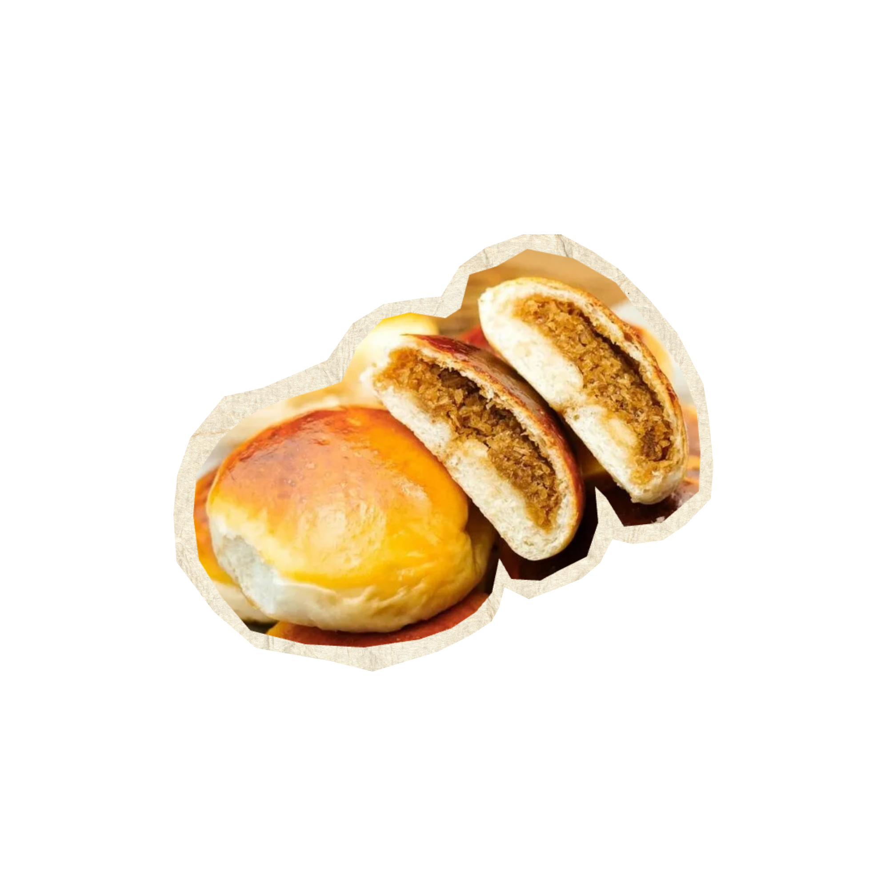
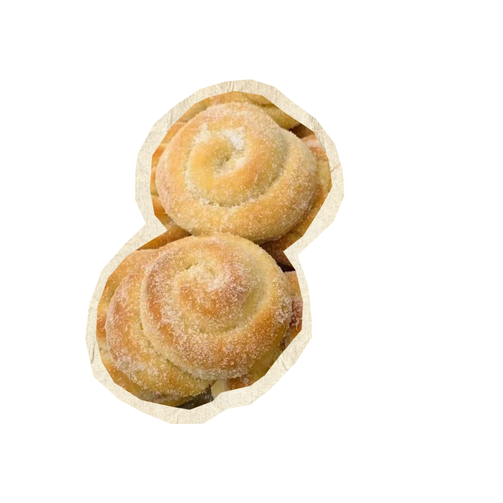
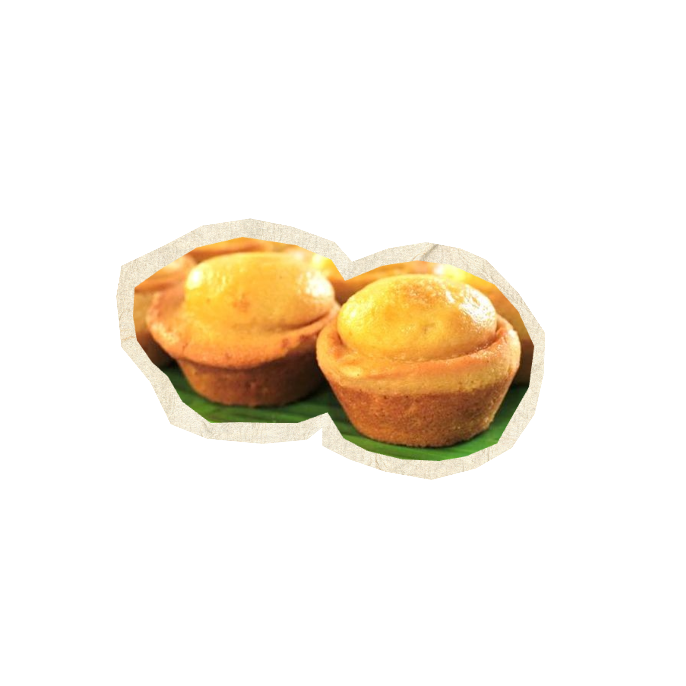

soft | buttery | sweet
A soft, pillowy Filipino bread filled with a sweet, buttery crumb mixture and baked until lightly golden. A classic merienda or breakfast favorite that pairs perfectly with coffee or hot chocolate.
read recipe ➔

crispy | caramelized | nostalgic
A soft, pillowy Filipino bread filled with a sweet, buttery crumb mixture and baked until lightly golden. A classic merienda or breakfast favorite that pairs perfectly with coffee or hot chocolate.
read recipe ➔

soft | creamy | traditional
A beloved Filipino rice cake traditionally enjoyed during the Christmas season. Soft and fragrant with a lightly toasted top, its especially delicious with butter, sugar, and grated cheese.
read recipe ➔

soft | coconutty | comforting
A tender Filipino bread filled with sweet, chewy coconut filling. Slightly sweet and wonderfully fragrant, it's a little taste of the tropics in every bite.
read recipe ➔

buttery | soft | fluffy
A soft and fluffy Filipino brioche-style pastry topped with creamy butter, sugar, and grated cheese. Sweet, buttery, and perfect for a cozy merienda.
read recipe ➔

soft | savory | cheesy
A tender, slightly sweet bread filled and topped with gooey cheese. Simple, comforting, and best enjoyed fresh from the oven.
read recipe ➔

soft | golden | sweet
A classic Filipino muffin-shaped bread with a lightly crisp, golden edge and a soft, sweet center. A simple panaderia favorite that's perfect with a warm drink.
read recipe ➔